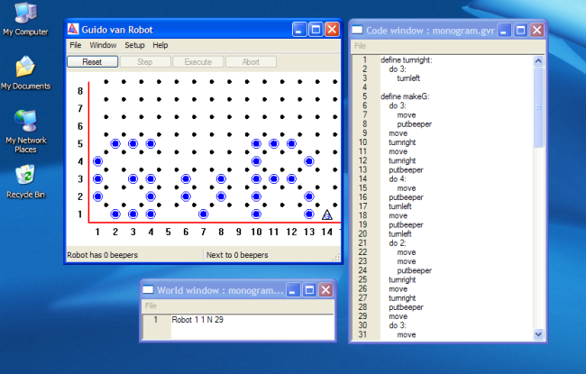
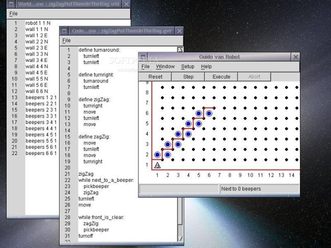

Introduction to programming for beginners
| Guido van Robot 4.4 Introduction to programming for beginners |
| Guido
van Robot, or GvR for short, is a programming language and also an
application designed to introduce beginners to the fundamentals of
programming. It's great in both the classroom and the home as a way of
introducing people to the basic concepts of programming. Guido van Robot is a minimalistic programming language providing just enough syntax to help students learn the concepts of sequencing, conditional branching, looping and procedural abstraction. Its biggest strength is that it permits this learning in an environment that combines the thrill of problem-solving with instant visual feedback. In short, it is an interactive, introductory programming language that is excellent for learning the basic concepts of programming, applicable in any high-level language. Best of all, it's a whole lot of fun, too! Literally GvR is a robot represented by a triangle on the screen that moves around in a world made up of streets and avenues, walls and "beepers", which Guido can collect or set. His actions are completely guided by a program written by the user. |
  |
{kind=link}
{kind=link}